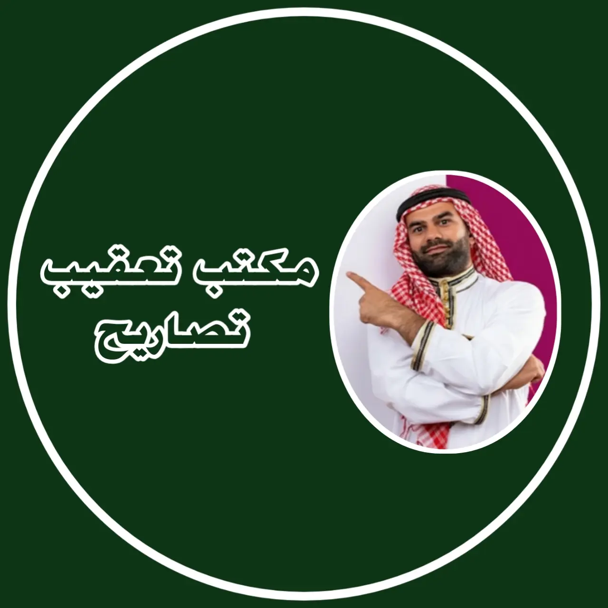
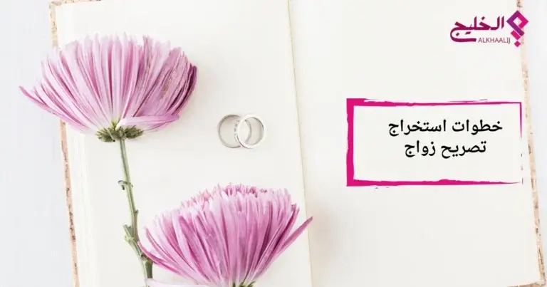
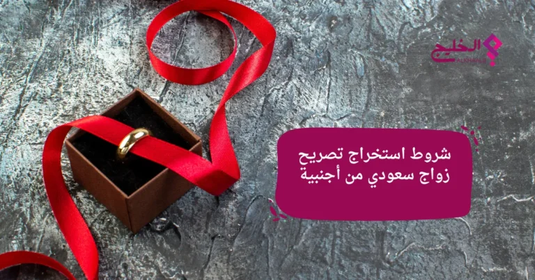

استخراج تصاريح الزواج ومعاملات التجنيس 2026
من نحن: مكتب تعقيب تصاريح زواج في قلب المملكة
"في مكتب تعقيب تصاريح،
نحن لا نكتفي بإنهاء الإجراءات...
إذا كنت تبحث عن معقب تصريح زواج خبير
فنحن نوفر لك أفضل الحلول القانونية."
لماذا يختار العملاء "مكتب تعقيب تصاريح"؟
سرعة تتجاوز التوقعات
نعمل بنظام "المسار السريع" لضمان أقل فترة انتظار ممكنة.
دقة قانونية متناهية
نراجع ملفك بدقة لتجنب الرفض، ونواكب تحديثات 2026.
شفافية وموثوقية
استشارات واقعية ونبقيك على اطلاع دائم بكل خطوة.
تخصصنا هو نجاح معاملتك:
-
تصاريح الزواج: نذلل الصعاب في استخراج تصاريح الزواج (من الخارج والداخل) وتجهيز كافة المسوغات القانونية.
-
ملفات التجنيس: احترافية عالية في متابعة معاملات تجنيس المواليد، الكفاءات، وزوجات المواطنين وفق أحدث المواد القانونية.
-
تصحيح الأوضاع: حلول قانونية مبتكرة لتوثيق الزواج وتصحيح الحالات المعلقة بذكاء وخبرة ميدانية واسعة.
المدونة المعرفية
دليلك القانوني الشامل حول معاملات التجنيس وتصاريح الزواج في المملكة في هذه المدونة الصديقة لكم نعرض لكم منشورات متنوعة وتوعوية عن معاملات التجنيس وتصاريح الزواج والمتطلبات كل معاملة

معاملات تصاريح الزواج
هل تفكر في الزواج من أجنبية؟ دليلك الكامل لخطوات استخراج تصريح زواج 2026
زواج المواطن السعودي من أجنبية لم يعد مجرد حلم أو أمنية بعيدة المنال، بل هو خيار متاح للكثيرين، شريطة الالتزام بالأنظمة والتعليمات التي وضعتها وزارة الداخلية لتنظيم هذه العملية. ربما تسمع الكثير من الأقاويل حول صعوبة الإجراءات أو طول فترة الانتظار، لكن الحقيقة أن الأمر أصبح أكثر سهولة ووضوحاً مما تتخيل، خاصة مع توفر الخدمات..
معاملات التجنيس
دليل الاستعلام عن معاملة تجنيس 2026: طرق المتابعة الإلكترونية والرسمية
أين وصلت معاملتي؟ متى أحصل على الموافقة؟ نضع بين يديك الدليل الشامل لمتابعة ملف التجنيس لدى وزارة الداخلية والخارجية بكل سهولة...

الأنظمة والقوانين
تحديثات نظام الزواج في السعودية: الشروط والمستندات المطلوبة لعام 2026
نستعرض معكم اليوم أهم التغييرات في اشتراطات العمر والوظيفة لاستخراج تصريح الزواج، وكيفية تقديم الطلب عبر منصة أبشر لضمان الموافقة السريعة وتجنب الملاحظات القانونية...